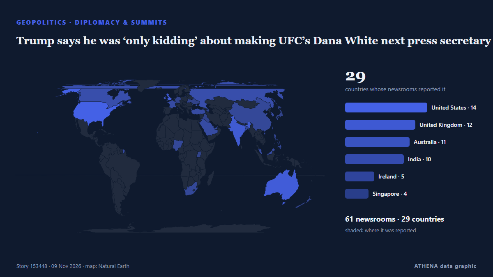

Trump says he was ‘only kidding’ about making UFC’s Dana White next press secretary

President Trump said he offered the job of White House press secretary to Dana White, president and CEO of the Ultimate Fighting Championship (UFC). από The Hill
Αναφέρθηκε ανεξάρτητα από 67 μέσα σε 31 χώρες από τις 7 Νοε, πρώτο το The Hill· η κάλυψη εξασθενεί. Το ATHENA δεν βρίσκει ενδείξεις κινδύνου στην κάλυψη. Βεβαιότητα 86% (υψηλή): το επιβεβαιώνουν 67 ανεξάρτητα μέσα, μέση αξιοπιστία 73%. Μέσα ανά χώρα: Ηνωμένες Πολιτείες (7), Αυστραλία (5), Ηνωμένο Βασίλειο (4). Κάλυψη: 7 Νοε έως 8 Νοε, 7 ώρες.
Γιατί έχει σημασία: Οι εξελίξεις στην ασφάλεια και τη διπλωματία μπορούν να μετατοπίσουν συμμαχίες, εμπόριο και αγορές πολύ πέρα από τις χώρες που εμπλέκονται.
Τι άλλαξε: 41 νέες αναφορές από 33 μέσα στο 24ωρο έως 9 Νοε.
Πρώτη διατύπωση: Donald Trump offers UFC boss job as his press secretary
Οι τίτλοι των ειδήσεων παρουσιάζονται στα αγγλικά, όπως δημοσιεύτηκαν.
Πώς να διαβάσετε αυτή τη σελίδα
- Τι διαβάζετε
- 67 μέσα σε 31 χώρες ανέφεραν αυτό το γεγονός. Οι αναφορές παρακάτω εμφανίζονται με τη σειρά που δημοσιεύτηκαν· κάθε τίτλος ανοίγει το αρχικό άρθρο. Το ATHENA δεν γράφει δικά του ρεπορτάζ.
- Η εκτίμησή μας
- Για την καταγραφή — Οι αναφορές περιγράφουν ένα ολοκληρωμένο, εσωτερικό, εμπορικό ή προσωπικό ζήτημα. Το καταγράφουμε ώστε να βλέπετε ποιος το ανέφερε και πότε. Δεν παρακολουθούμε εδώ κίνδυνο ευρύτερης σύγκρουσης.
- Πόσα στοιχεία υπάρχουν
- Ισχυρή Πολλά ανεξάρτητα μέσα σε πολλές χώρες περιγράφουν το ίδιο γεγονός.
Αφού αφαιρεθούν οι επαναλήψεις, τα άσχετα και τα παλιά στοιχεία, υπολογίζονται 30 από τις 40 αναφορές που παρατίθενται· το 100% των τίτλων αντιστοιχεί στο γεγονός.
- Τι δεν σημαίνει
- Το ATHENA μετρά πώς καλύπτεται ένα γεγονός, όχι αν είναι αληθές. Δεν είναι πρόβλεψη, κρίση για το ποιος έχει δίκιο ή συμβουλή.
- Τι θα την άλλαζε
- Αναφορές από άλλα ανεξάρτητα μέσα που δείχνουν διαφορετική εξέλιξη, ή σαφής επιβεβαίωση ή διάψευση από επίσημη πηγή.
Εκτίμηση R2 · ανανεώνεται με κάθε ενημέρωση της σελίδας. Το ATHENA δεν έχει δημοσιεύσει ακόμη ιστορικό επιδόσεων για αυτές τις εκτιμήσεις· όταν το κάνει, θα συνδέεται εδώ.
Με μια ματιά
Επιλέγεται, βαθμολογείται και γράφεται από τη δημοσιευμένη μεθοδολογία του ATHENA. Κανένας συντάκτης δεν παρεμβαίνει σε μεμονωμένα γεγονότα. Πώς παράγεται ›
| 07 Nov 18:55 UTC | 20 |
|---|---|
| 07 Nov 20:55 UTC | 9 |
| 07 Nov 22:55 UTC | 9 |
| 08 Nov 00:55 UTC | 8 |
| 08 Nov 02:55 UTC | 5 |
| 08 Nov 04:55 UTC | 5 |
| 08 Nov 06:55 UTC | 6 |
| 08 Nov 08:55 UTC | 6 |
| 08 Nov 10:55 UTC | 3 |
| 08 Nov 12:55 UTC | 3 |
| 08 Nov 14:55 UTC | 1 |
| 08 Nov 16:55 UTC | 2 |
| 08 Nov 18:55 UTC | 0 |
| 08 Nov 20:55 UTC | 2 |
| 08 Nov 22:55 UTC | 6 |
| 09 Nov 00:55 UTC | 8 |
| 09 Nov 02:55 UTC | 4 |
| 09 Nov 04:55 UTC | 6 |
| 09 Nov 06:55 UTC | 5 |
| 09 Nov 08:55 UTC | 5 |
| 09 Nov 10:55 UTC | 1 |
| 09 Nov 12:55 UTC | 1 |
Γιατί αυτοί οι αριθμοί
Σημασία
Κίνδυνος
Βεβαιότητα
Η κάλυψη — ποιος το ανέφερε και πότε
ο τίτλος όπως δημοσιεύτηκε · ανοίγει το πρωτότυπο- The Hill · Ηνωμένες ΠολιτείεςTrump says he offered White House press secretary job to Dana White
- Kurdistan24 (English) · ΙράκTrump Offers White House Press Secretary Job To UFC’s Dana White
- APA (English) · ΑζερμπαϊτζάνTrump offers UFC chief Dana White top communications job
- ABC News Australia · ΑυστραλίαTrump offers press secretary role to UFC chief Dana White
- Evening Standard (London) · Ηνωμένο ΒασίλειοDonald Trump offers UFC boss job as his press secretary
- Belfast Telegraph · Ηνωμένο ΒασίλειοDonald Trump offers UFC boss job as his press secretary
- Business Insider · Ηνωμένες ΠολιτείεςTrump says he offered 'violent fighter' Dana White the role of press secretary: 'Dana, please take the job!'
- DW English · ΓερμανίαTrump offers White House press secretary role to Dana White
- TASS (English) · ΡωσίαTrump says he offers press secretary position to UFC CEO Dana White
- Variety · Ηνωμένες ΠολιτείεςTrump Offers Press Secretary Role to UFC CEO Dana White, Asks That He Bring Assistants to ‘Defend Us Against the Lunatic Left’
- The Age · Αυστραλία‘On to the next chapter’: UFC boss Dana White says he’ll meet with Trump over press secretary job
- Stuff · Νέα ΖηλανδίαTrump wants UFC boss as White House press secretary, with MMA fighters as assistants
- Irish Examiner · ΙρλανδίαDonald Trump offers UFC boss Dana White job as his press secretary
- The Straits Times · ΣιγκαπούρηTrump says he wants UFC chief Dana White for White House press secretary
- Manchester Evening News · Ηνωμένο ΒασίλειοDonald Trump offers UFC boss Dana White job as press secretary
- Sydney Morning Herald · ΑυστραλίαTrump offers UFC boss role of White House press secretary
- The Independent · Ηνωμένο ΒασίλειοTrump offers press secretary role to UFC CEO Dana White
- Deadline · Ηνωμένες ΠολιτείεςUFC’s Dana White As White House Press Secretary? Trump Says “Please Take The Job!”
- The Canadian Press (via CityNews) · ΚαναδάςUFC’s Dana White says he will meet with Trump Monday over offer to be White House press secretary
- France 24 English · Γαλλία'A violent fighter and warrior': Trump offers press secretary role to UFC chief Dana White
- PBS NewsHour · Ηνωμένες ΠολιτείεςTrump says he's asked UFC's Dana White to be his press secretary
- The Jerusalem Post · Ισραήλ'Please take the job': Trump offers UFC CEO Dana White position of White House Press Secretary
- CNBC World · Ηνωμένες ΠολιτείεςTrump offers UFC chief Dana White press secretary job
- Ukrinform (English) · ΟυκρανίαTrump offers UFC Chief White House press secretary job to defend against 'Lunatic Left'
- New Straits Times · ΜαλαισίαTrump offers press secretary role to UFC chief Dana White [WATCH]
- Punch · ΝιγηρίαTrump wants UFC president as press secretary
- SBS News · ΑυστραλίαDonald Trump offers UFC chief Dana White job as White House press secretary
- ESPN · Ηνωμένες ΠολιτείεςTrump offers press secretary role to White; UFC boss to meet with president
- TASS (English) · ΡωσίαUFC chief turned down offer to become White House press secretary — CNN
- TASS (English) · ΡωσίαUFC chief to discuss offer to become White House press secretary with Trump
- Deccan Herald · ΙνδίαTrump says he wants UFC chief Dana White for White House press secretary
- Anadolu Agency (English) · ΤουρκίαUFC CEO Dana White 'declines' Trump’s offer to become press secretary
- RTÉ News · ΙρλανδίαUFC's Dana White to meet Trump over press secretary offer
- TRT World · ΤουρκίαTrump offers UFC's Dana White US press secretary role
- Arab News · Σαουδική ΑραβίαUFC’s Dana White says he will meet with Trump Monday over offer to be White House press secretary
- CGTN (World) · ΚίναTrump offers UFC CEO Dana White White House press secretary job
- CBC News · ΚαναδάςUFC boss Dana White says he's meeting with Trump after press secretary job offer
- The Age · ΑυστραλίαDana White responds to Trump's job offer
- Livemint · Ινδία‘We need UFC fighters to defend us’: Donald Trump says he offered White House Press Secretary job to Dana White
- Mainichi (English) · ΙαπωνίαUFC's Dana White says he will meet with Trump Monday over offer to be White House press secretary